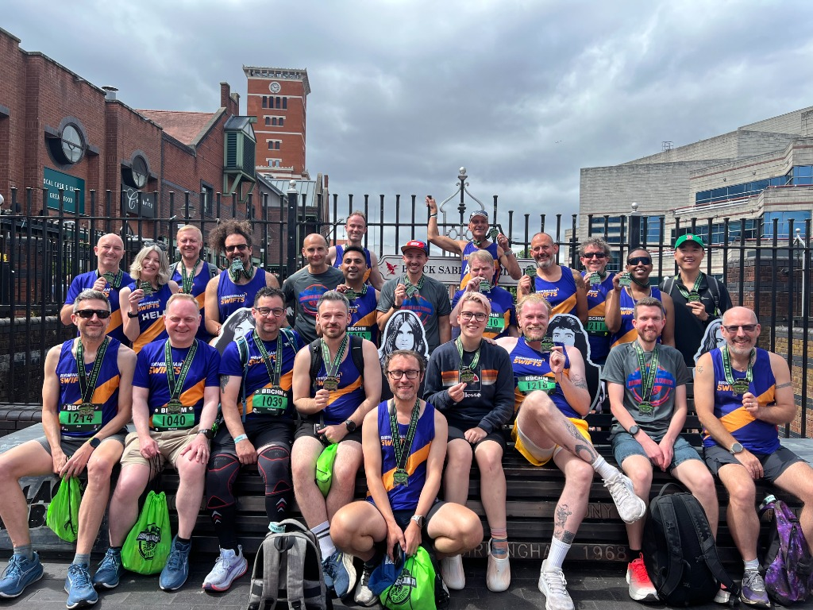

Our Story & Philosophy
Founded in Birmingham, the Birmingham Swifts were created to provide a genuinely inclusive, safe, and supportive space where LGBTQ+ people and supportive allies can meet, stay active, and make lasting friendships.
We believe that running belongs to everyone. Whether you have never run a single step in your life, are working through our beginner Couch to 5k program, or are logging 50-mile ultra-marathons across the British hills, you are valued, respected, and welcomed here.
As an England Athletics affiliated club, we combine professional coaching standards and trained run leadership with an informal, friendly, non-elitist club culture. We meet in the heart of Birmingham at Pagoda Island in the Gay Village every Thursday night, followed by social drinks at The Fox, with unofficial parkruns and weekend trail runs throughout the year.
The Three Pillars of Swifts Running
Everything we do is guided by warmth, community safety, and celebratory support.
100% Inclusive Environment
Regardless of your sexual orientation, gender identity, background, or running pace, you will always find a warm welcome and genuine camaraderie. We proudly march in Pride, champion diversity in athletics, and foster an environment where you can truly be yourself.
No Runner Left Behind
Our Thursday club sessions feature designated Run Leaders and friendly Tail Walkers / Tail Runners. We run at conversational paces, loop back to support each other, and regather at checkpoints. You will never have to worry about holding anyone back or running alone.
Running & Social Balance
Running is only half the fun! We host regular post-run drinks in Birmingham's Gay Village, weekend brunch runs after parkruns, pride parade squads, festive Christmas socials, and weekend away race trips. The friendships you build off the trail last a lifetime.
Certified Coaching & Dedicated Welfare
The club is supported by 15+ licensed England Athletics Run Leaders and 3+ EA Qualified Coaches who plan safe, illuminated canal and street routes, design structured interval training, and coach complete beginners through Couch to 5k.
Your physical and emotional safety is our highest priority. We maintain a proactive Welfare & Safeguarding team that ensures our club remains an open, non-discriminatory, and zero-tolerance harassment space for all members.
Ready to Experience Swifts?
Come along to our Thursday social run or Saturday parkrun meetup. No commitment, no fees — just great company and friendly running!